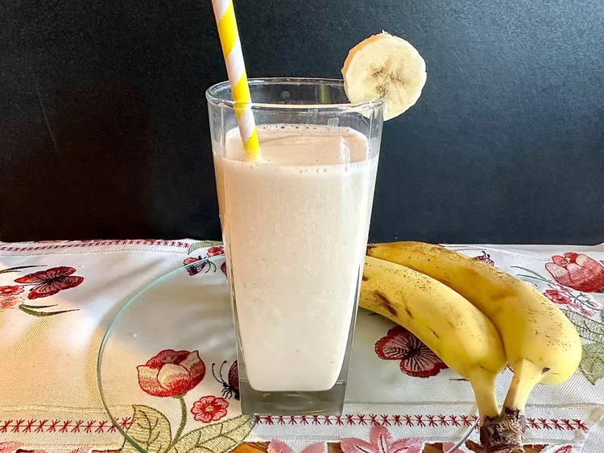

Korean Banana Milk

The recipe for this delicious and crunchy ramen cabbage salad
I have had a hard time finding Korean Banana Milk so I decided to make my own. This turned out delicious and so much less expensive.
Ingredients
- 1 banana
- 1/2 cup whole milk
- 1/2 cup cold water
- 1 tablespoon pure maple syrup
- 1 teaspoon vanilla
- 4 to 5 ice cubes (optional)
Steps:
- Combine banana, milk, water, maple syrup and vanilla in the blender cup. Blend until smooth.
- Place ice cubes in glass (if using). Pour banana milk on top.
Back to Recipes